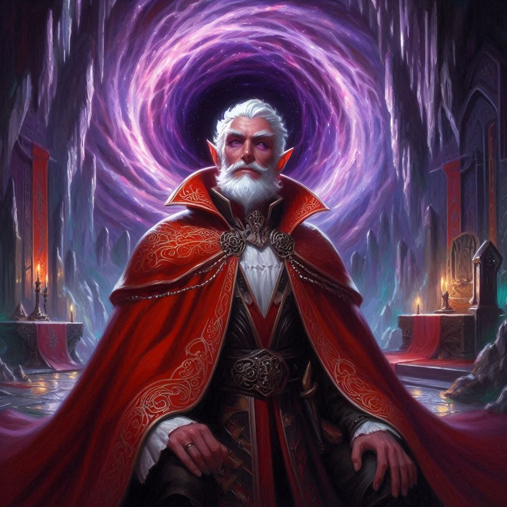

The Dark Proposal
Jorsh has summoned dark magic and pulls you into his teleportation vortex. As the world around you shifts and blurs, a rush of wind pulls you, Elias, and Jorsh into a new reality. You stumble forward, and as your eyes adjust, you find yourself standing in the grand Capital of the Dark Elf Kingdom, Umbra’Thal. Dark stone towers loom overhead, adorned with intricate carvings that pulse with dark energy. The air is thick with an eerie silence, broken only by the distant echo of footsteps.
Jorsh stands beside you, his presence both comforting and unsettling. “We need to move quickly,” he whispers, his eyes scanning the shadows. “The Minister of Trade, Varis Nythal, is closer than you think.”
You nod, your heart pounding. The weight of the situation presses heavily on your shoulders. This isn’t just about Jorsh anymore; this is about the safety of Belladonna, your home, and the people you love. You glance at Elias, who meets your gaze with determination mixed with concern and disappointment.
Together, the three of you weave through the labyrinthine corridors of the dark elf stronghold, Jorsh leading the way with confidence that feels both reassuring and disconcerting. You can’t shake the feeling that there’s a trap waiting for you at the end of this path.
As you enter the inner sanctum, the atmosphere shifts. A dark energy envelops the chamber, and you feel a chill race down your spine. In the center of the room, a figure stands cloaked in shadow—Varis Nythal. His presence is commanding, and an unsettling familiarity washes over you.
“Ah, the wayward half-elf and her companions,” Varis says, his voice dripping with malice. “You’ve come to witness the culmination of my plan.”
“Your plan?” you echo, a knot forming in your stomach.
He steps forward, the shadows shifting with him, revealing a smirk that sends a shiver down your spine. “Yes. I have been pulling the strings all along. I am not just the Minister of Trade. I am the true monarch of Umbra’Thal, and I intend to invade your world through the portals under Hemlock Caverns.”
Your breath catches in your throat as the realization hits. This man has been orchestrating everything—the chaos, the manipulation, the dark magic. He wants to tear down the barriers between worlds and unleash the dark elves on Belladonna.
Jorsh’s expression hardens, a mix of fury and determination. “You won’t get away with this. We’ll stop you!” He glances at you, his eyes intense. “But I need your love, Kira. Only your love can amplify my power enough to defeat him. And my love… will amplify your power. Together, we can wield the darkness and protect Belladonna.”
You feel a conflict brewing within you, the tension between your feelings for Jorsh and your loyalty to Elias. “Jorsh, I—”
Before you can finish, Elias steps forward, his voice urgent and pleading. “Kira, don’t listen to him! This is a trap. We need to destroy the portals before it’s too late. If Varis gets what he wants, he’ll let the dark elves invade our world, and we can’t allow that to happen.”
The tension in the room reaches a boiling point as Varis laughs, the sound echoing off the stone walls. “Foolish children. You have no idea what you’re up against.”
Just as Jorsh unleashes a powerful blast of magic towards Varis, the air thunders with energy, and the two engage in a fierce battle of dark forces. Runes on the walls pulse with the intensity of their magic, casting eerie shadows around the chamber.
You stand at a crossroads, witnessing the power struggle unfold before you. The urgency of the moment weighs heavily on your heart. You realize that whatever choice you make will shape not just your fate but the fate of Belladonna itself.